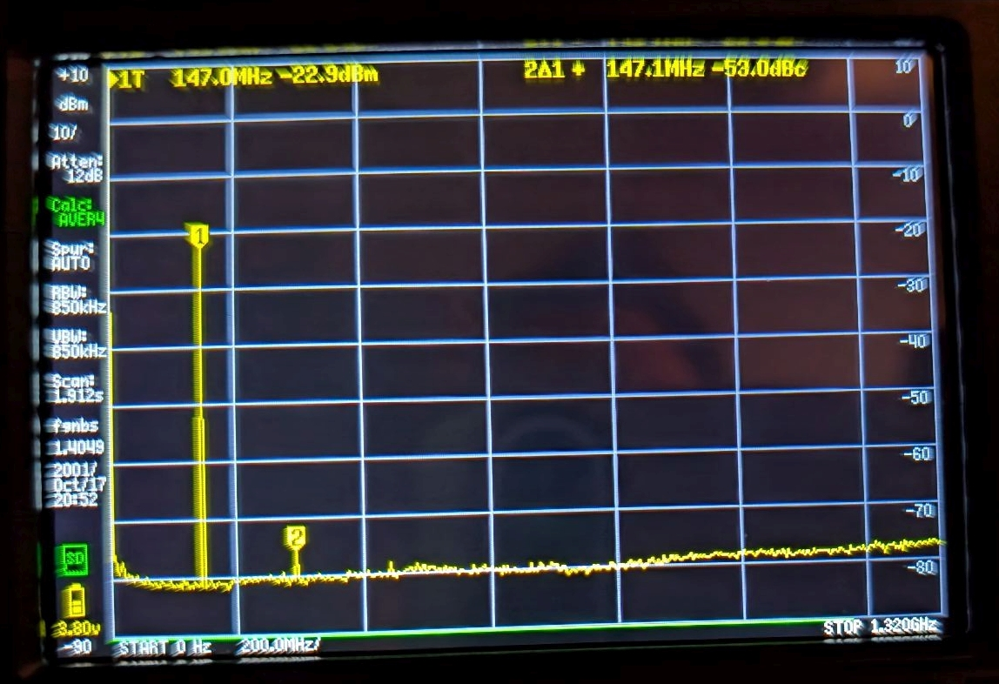
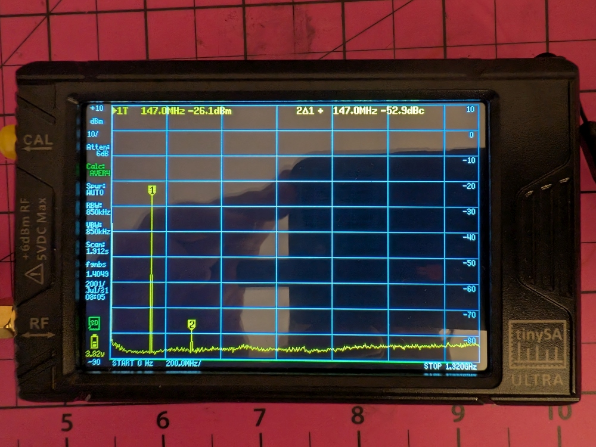
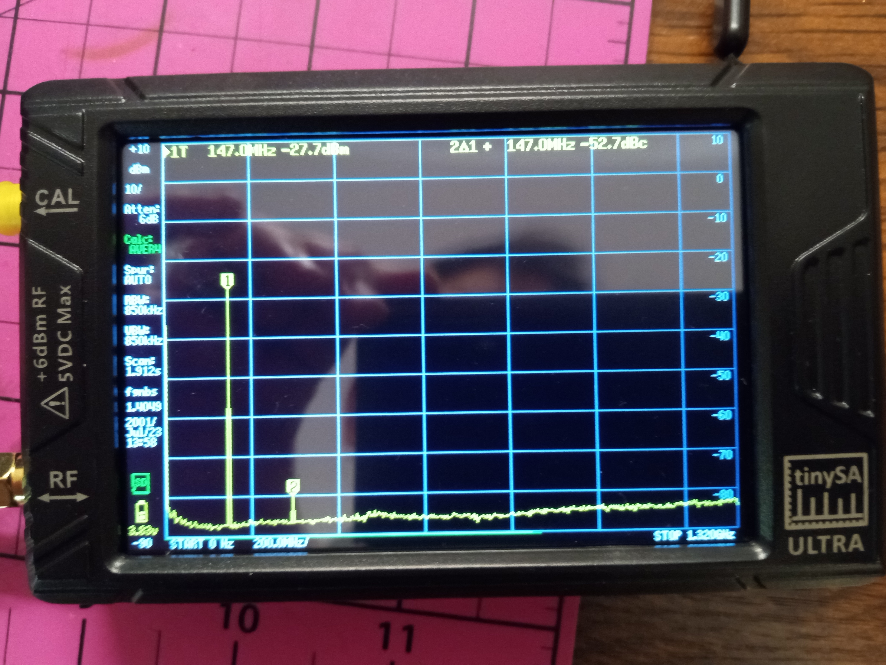

Test results
I've tested harmonic filtering with a TinySA spectrum analyzer to ensure it meets FCC part 97 spurious emissions requirements (which for VHF must be at least -40dBc for 2nd harmonic and below 10uW).
PCB v1.8x
v1.8a, v1.8b, and v1.8c of the PCB are -53.0dBc for the 2nd harmonic, and 5uW of harmonic power, fully FCC part 97 compliant (tested with 62dB of attenuation):

PCB v1.7b
v1.7b of the PCB is -52.9dBc for the 2nd harmonic, and 5uW of harmonic power, fully FCC part 97 compliant (tested with 56dB of attenuation):

PCB v1.7
v1.7 of the PCB is -52.7dBc for the 2nd harmonic, and below 4uW of harmonic power, fully FCC part 97 compliant (tested with 56dB of attenuation):
